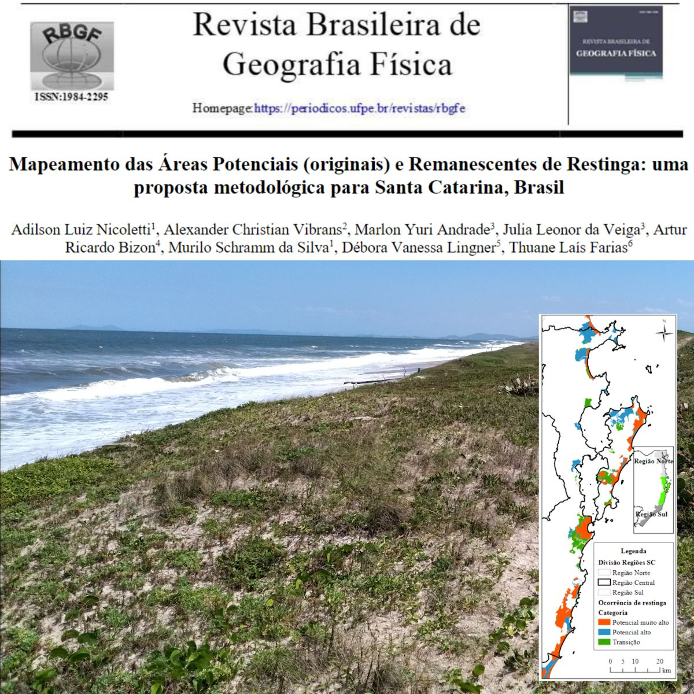
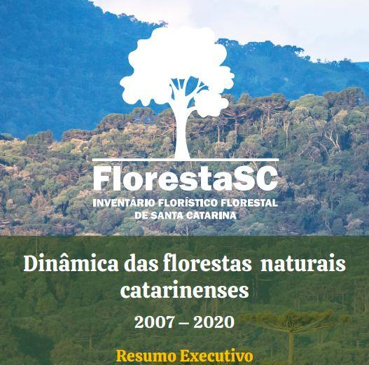
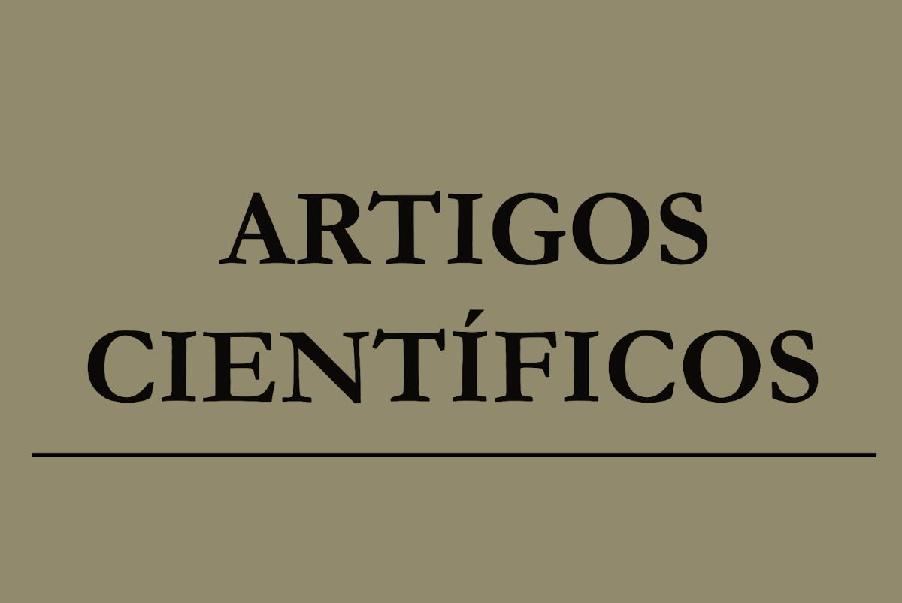
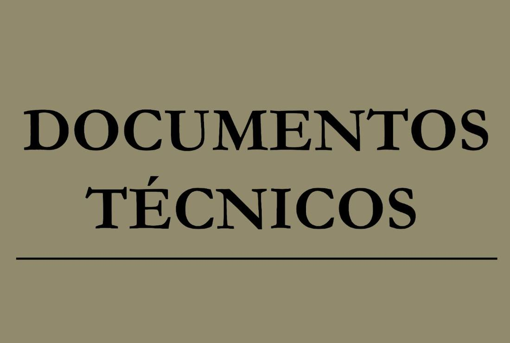
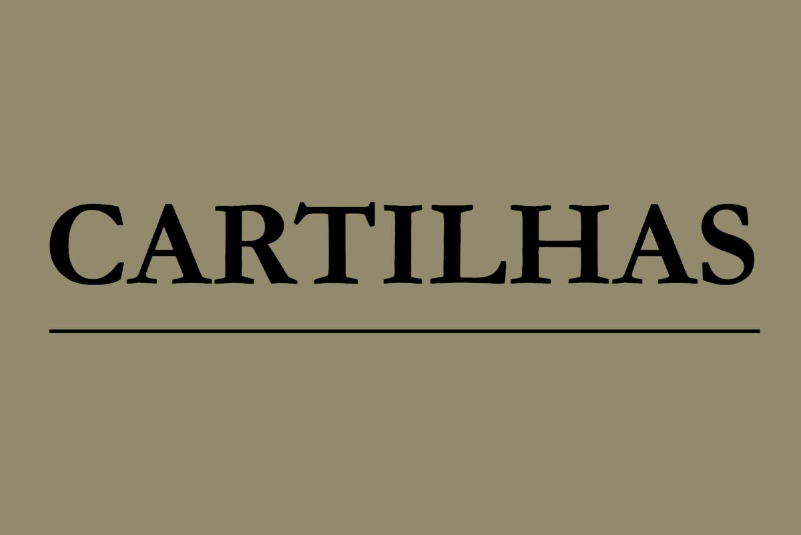
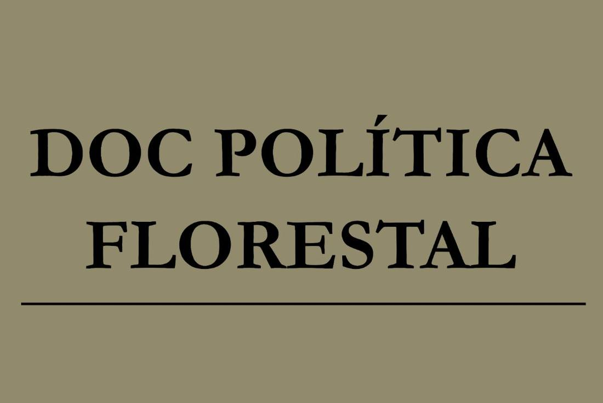

Uma das propostas do FlorestaSC é gerar publicações de alta qualidade científica envolvendo resultados relacionados às florestas catarinenses.
Últimas Publicações




Dinâmica das florestas naturais catarinenses (ênfase em estoques de carbono)Cartilha – 2024Publicações - Inventário Florestal
- Volume I - Diversidade e Conservação dos Remanescentes Florestais
- Volume II - Floresta Estacional Decidual
- Volume III - Floresta Ombrófila Mista
- Volume IV - Floresta Ombrófila Densa
- Volume V - Epífitos
- Volume VI - Guia dos Epífitos de Santa Catarina
- Volume VII - Espécies raras de Santa Catarina
- Biodiversidade Catarinense: características, potencialidades, ameaças
- Regressão linear aplicada à dendrometria: uma introdução e iniciação ao R

- Artigos publicados em revistas científicas
- Dissertações de mestrado
- Teses de doutorado
- Trabalhos de conclusão de curso
- Relatórios de estágio supervisionado

- Manual de Campo do IFFSC/MonitoraSC: Remedições
- Ampliação da amostragem do Inventário Florístico Florestal de Santa Catarina (IFFSC/MonitoraSC) nas Unidades de Conservação Estaduais
- Modelo de volume total para espécies arbóreas da Floresta Ombrófila Densa de Santa Catarina
- Modelos genéricos de biomassa acima do solo para espécies arbóreas da Floresta Ombrófila Densa de Santa Catarina

Inventário dos Remanescentes Florestais
- Perguntas e Respostas sobre o IFFSC/MonitoraSC
- Metodologia IFFSC/MonitoraSC dos Trabalhos Executados 2007/2011
- Resultados Resumidos dos Trabalhos Executados 2007/2011
- O quê você deve saber sobre as florestas de Santa Catarina
- Venha conhecer o "censo" das florestas!
- Mapeamento da cobertura florestal de Santa Catarina
Levantamento Socioambiental (LSA)
- Levantamento socioambiental
- Caracterização socioambiental e sistema de informações florestais
- Percepção dos moradores sobre serviços ambientais das florestas
- Cipó-mil-homens (Aristolochia triangularis) – Mitos e verdades
- Espinheiras-santa nativas de Santa Catarina
- Uso equivocado de plantas medicinais em Santa Catarina
- Palmeira-juçara – Percepções sobre uso e conservação
- Uso madeireiro de espécies nativas de Santa Catarina
- Um olhar para as plantas ornamentais nativas de Santa Catarina
- Araucária – Percepções sobre uso e conservação
Boletins periódicos sobre o andamento das atividades do IFFSC e novidades.
- Biodiversidade Catarinense
- Espécies raras e ameaçadas de Santa Catarina
- Cartazes de divulgação

Apresenta as linhas de ação para desenvolvimento de uma nova política florestal no estado de Santa Catarina
Publicações - MapeamentoMonitoraSC: um novo mapa de cobertura florestal e uso da terra do estado de Santa Catarina.Mapeamento das Áreas Potenciais (originais) e Remanescentes de Restinga: uma proposta metodológica para Santa Catarina, Brasil.Filling the gap between pasture and forests: classifying initial-stage forests in the subtropics using satellite data
Trabalhos apresentados no Simpósio Brasileiro de Sensoriamento Remoto (SBSR)Publicações - Educação FlorestalBIBLIOTECA DA FLORESTA CATARINENSEInformativos "Florestando na Escola"Cartilha "O quê você deve saber sobre as florestas de Santa Catarina"Resumos de Trabalhos apresentados em eventosLiteratura clássica sobre as florestas de SC
- Using satellite image-based maps and ground inventory data to estimate the area of the remaining Atlantic forest in the Brazilian state of Santa Catarina
- Effects of topographic correction on natural forest reflectance in a mountainous region of southern Brazil. In: XIX Simpósio Brasileiro de Sensoriamento Remoto, 2019, Santos. Anais do XIX Simpósio Brasileiro de Sensoriamento Remoto. São José dos Campos: INPE, 2019. v. 17. p. 1-4.
- Enciclopédia Flora Ilustrada Catarinense - FIC
- Klein, R.M. O aspecto dinâmico do pinheiro-brasileiro
- Reitz, R. Vegetação da zona marítima de Santa Catarina
- Klein, R.M. Importância e fidelidade das Lauráceas na "Formação de Araucária" do estado de Santa Catarina
- Klein, R.M. Árvores Nativas da Floresta Subtropical do Alto Uruguai
- Klein, R. M. Mapa fitogeográfico do Estado de Santa Catarina. In: Reitz, R. (Ed.). Flora Ilustrada Catarinense.
- Reitz, R.; Klein, R.M.; Reis, A. Madeiras do Brasil: Santa Catarina
- Klein, R. M. Ecologia da flora e vegetação do Vale do Itajaí
- Klein, R. M. Ecologia da flora e vegetação do Vale do Itajaí (continuação)
- Klein, R. M. Aspectos dinâmicos da vegetação do sul do Brasil
- Leite, P.F.; Klein, R.M. 1990. Vegetação. In Geografia do Brasil: Região Sul.
- Reis, A.; Fantini, A. C.; Reis, M. S.; Guerra, M. P.; Doebeli, G. Aspectos sobre a conservação da biodiversidade e o manejo da Floresta Tropical Atlântica
FlorestaSC
florestasc@furb.br 47 3221-6100
Página migrada de floresta.sc.gov.br.